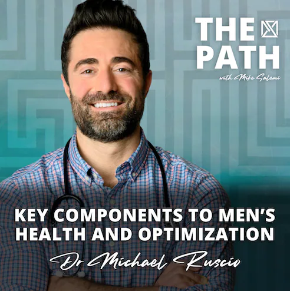

B878 · Key Components to Men’s Health and Optimization
Hi {first_name},
Today on The Path we are joined by Dr. Michael Ruscio. He is a naturopathic practitioner, doctor of chiropractic, clinical researcher, author, and incredibly successful podcaster. Dr. Ruscio has wealth of knowledge about all things related to health and human performance. Today we talk a lot about optimizing men’s health and fitness, managing stress, the importance of having role models, and the why behind striving to be better. For an entrepreneur as successful as Dr. Ruscio is, it truly amazes me how he still manages to prioritize his health above all.
In Episode #22 of The Path Podcast, Dr. Ruscio and I discuss:

Click here to listen on Apple.
Click here to listen on Spotify. Yours in Health, Mike |